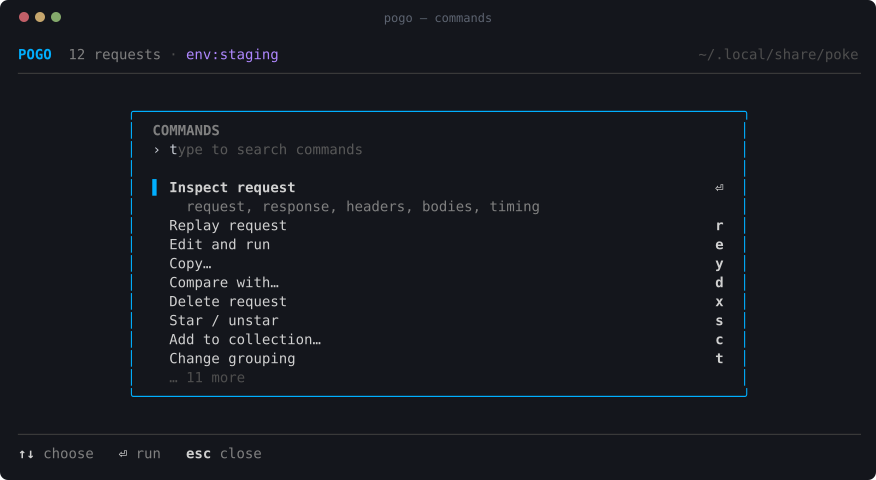
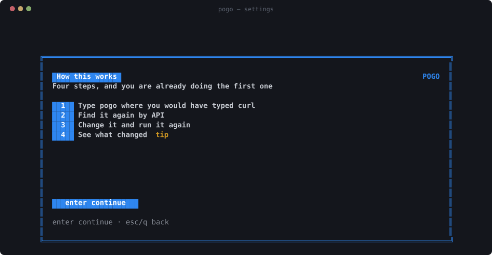
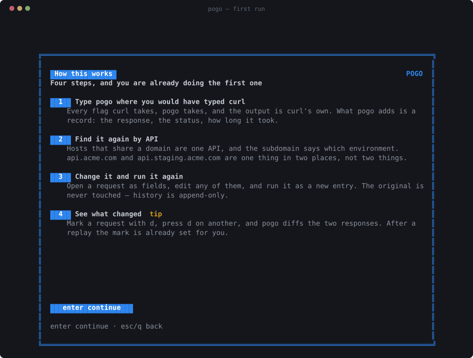
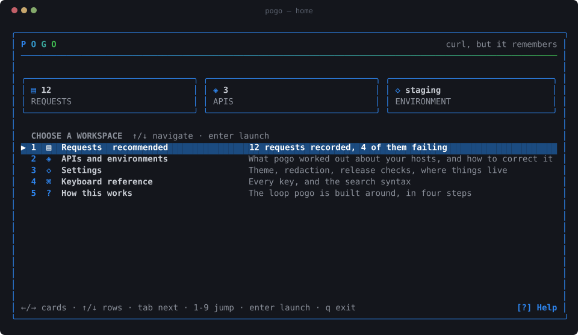

pogo
curl, but it remembers.
Type pogo where you would have typed curl. Same flags, same
output, same exit code — it hands your arguments to the real curl binary.
Then it writes down what happened, and gives you somewhere to go and look.
every screenshot here is a real frame, captured from a real pogo in a pty

Your shell remembers the command. It does not remember the response,
the status, how long it took, or which of the six nearly identical
curl lines in your history was the one that worked.
$ pogo curl https://api.acme.com/users/42 { "id": 42, "name": "Pato", "tier": "gold" } # later, without having saved anything $ pogo
You never saved anything. You never named a collection. It was just there.

the part that makes history navigable
One API, however many hosts it has
api.acme.com, api.staging.acme.com and
dev-api.acme.com are not three unrelated servers. They are one
API in three environments, and history that lists them as three hosts has
thrown away the only fact that made it navigable.
So pogo groups by the registrable domain and reads the environment out of what is left. Nothing to configure, nothing to name: it is true of your history the first time you open it.

01
It guesses
Registrable domain for the API, subdomain and port for the environment: staging, dev, qa, sandbox, preprod, local.
02
You correct it
Pin a host to an environment, move one to a different API, give an API a name. One keypress, written to disk immediately.
03
It stays corrected
Overrides win forever after — and apply backwards, to the six weeks of history that used that host.
$ pogo api acme.com 9 requests prod api.acme.com 3 staging api.staging.acme.com 4 dev dev-api.acme.com 2 stripe.com 2 requests prod api.stripe.com 2 $ pogo api pin api-2.acme.com staging # stop guessing, it is staging $ pogo api name acme.com Acme # call it what you call it
And it is searchable: api:acme.com,
env:staging, or both.
environments
A name that is global, values that are not
“staging” means the same word everywhere. What it points at belongs
to one API. So {{base}} is acme's staging host for an acme
request and the payments team's for a payments one, and neither of them has
to be called acme_staging_base.
$ pogo env set staging --api acme.com base=https://api.staging.acme.com $ pogo env set staging --api acme.com token=sk_test_9f2b1c $ pogo env use staging $ pogo curl -H "Authorization: Bearer {{token}}" '{{base}}/users'
Variables are expanded on the way to curl and nowhere else. The history entry keeps the braces, so the token never lands on disk beside your requests — and a replay next month resolves against whatever the variable holds then, which is usually what you wanted, since the token you captured expired weeks ago.

the loop
Run it, find it, change it, compare it
⏎
Read it
Request and response, headers, query parameters, bodies, a JSON tree you can fold, secrets masked until you ask, and where the time went.
r
Replay it
Runs the same argv through the same code path pogo itself uses. Not a reconstruction — the same request, recorded as a new entry.
e
Change it
Opens as fields: method, URL, query, headers, body. Anything the editor does not model is preserved, because the original argv stays authoritative.
d
Compare it
Two responses, diffed. After a replay the mark is already set, so “what changed?” is one keypress.


finding things
Search that teaches itself
The sidebar shows what is actually in your history — filters, APIs and their
environments, collections — with counts. tab focuses it,
⏎ filters by a row, and the search box then shows the query it
ran. That is how the syntax gets learned without reading anything.

And when you do not know the key yet, ctrl+k is the answer to
“what else can this do?”. Every row carries its shortcut, so finding
something by searching teaches the key — the palette is built to make itself
unnecessary.

what lands on disk
Secrets
History lives in ~/.local/share/pogo as an append-only JSONL
log plus payload files. Directory 0700, files 0600.
No account, no cloud, no telemetry — your requests never leave the machine.
Request headers routinely carry credentials, and by default pogo stores them as sent. Your history file will contain bearer tokens, cookies and API keys in plain text. That is a trade-off, not an accident: stripping them would make replay silently fail to authenticate. pogo masks secrets on screen; the file on disk holds the real thing.
Three ways to change that, in increasing order of strength:
POGO_REDACT=store pogo curl ... # strip secrets before writing pogo curl --pogo-no-capture ... # do not record this one at all pogo curl -H "Authorization: Bearer {{token}}" ... # never capture it at all

Per-host rules let production and localhost have different answers. Read the security notes before pointing this at production credentials — they are short and they do not hedge.
The one thing pogo does over the network by itself: it asks GitHub once a
day whether a newer release exists, only from an interactive terminal, and
only ever prints a line saying so. Installing needs pogo update
or a confirmation in the UI. POGO_NO_UPDATE_CHECK=1 switches it
off.
one binary
Install
# needs curl, which you already have $ curl -fsSL https://raw.githubusercontent.com/rmpato/pogo/main/install.sh | sh $ pogo curl https://api.github.com/zen # a request, exactly as curl would run it $ pogo # everything you have run
Or, if you have Go:
$ go install github.com/rmpato/pogo/cmd/pogo@latest
macOS and Linux. Update later with pogo update. curl is the only
runtime dependency, because pogo does not implement HTTP — it delegates to
the curl you already trust.
The whole command line
$ pogo # the UI, over everything you have run $ pogo curl -sS https://… # wrap curl and record it $ pogo https://api.acme.com/me # the same thing, without typing curl $ pogo list --json | jq # history, for a script to read $ pogo api # show and correct the grouping $ pogo env # the variables requests resolve against $ pogo import-har out.har # bring in what the browser did


H from anywhere opens the shell above the list.why not shell history
Because it only kept half of it
$ history | grep curl
| what you get back | shell history | pogo |
|---|---|---|
| the command | yes | yes |
| what came back | no | yes |
| status code | no | yes |
| how long it took | no | yes |
| where the time went | no | yes |
| which API and environment | no | yes |
| search by status, API or collection | no | yes |
| replay | retype it | r |
| edit and replay | retype it | e |
| compare two responses | no | d |
pogo is HTTP-aware history for your terminal. That is all it is trying to be.
keyboard
Every key, on one screen

how it works
A wrapper, not a reimplementation
pogo curl <args> ──▶ curlargs ──▶ runner ──▶ the real curl
(metadata) (execute + capture)
│
capture ──▶ store (JSONL + blobs, local)
▲ │
│ ▼
the UI replays ─┘ tui ──▶ apis (which API? which env?)
Your arguments are handed to curl verbatim; pogo appends its own capture options and never rewrites yours. A replay is not a reconstruction of the original request — it is the same code running the same argv, which is why a parser gap can degrade a history record but never a request.
Go, Cobra, Bubble Tea and Lip Gloss, built on whis — the design system every screen here is composed from. No database, no cgo, no daemon. Full architecture notes.